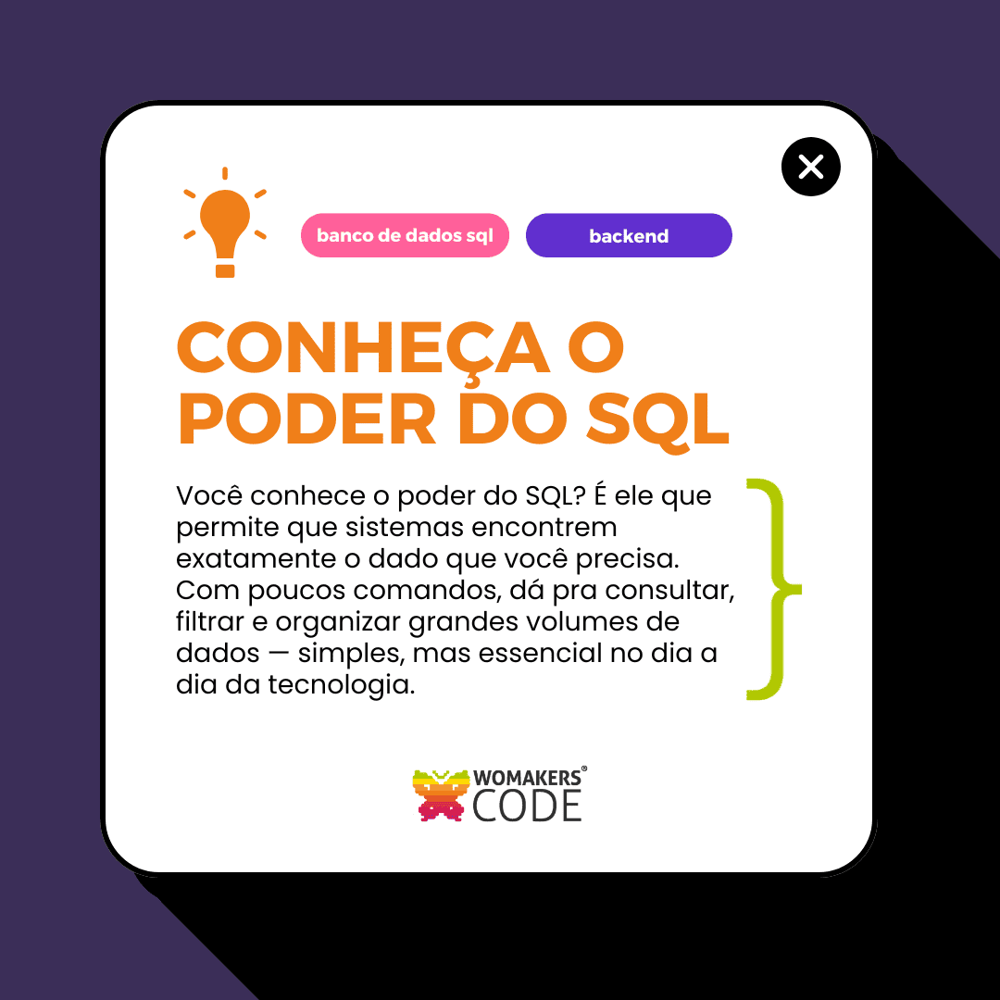

Produzi conteúdo estratégico e gerenciei esta marca de 2020 até 2025, no Instagram e LinkedIn. Meus posts alcançavam 4k de salvamentos e comentários de pessoas dizendo que aprendiam mais comigo do que em vídeos massantes de 1h no YouTube. Meu projeto visou ensinar Front-End e UX/UI Design de forma gratuita para iniciantes em programação.
Veja mais
Sou Produtora de Conteúdo Educacional de Tecnologia na WMC - uma ONG com ensino gratuito para mulheres. Além da criação voluntária de textos para as redes sociais, também faço revisão de materiais.
Veja mais
Esta página utiliza a mesma linguagem das redes sociais para gerar proximidade com o público-alvo. As cores, imagens, elementos gráficos são todos pensados para atração e venda.
Veja mais
Landing Page profissional e conversiva para consultório odontológico. O foco principal é atrair pacientes com alto desempenho em mobile e desktop. Responsiva, alta velocidade de carregamento, SEO básico, estrutura leve e design moderno.
Veja mais
Esta página fictícia foi feita como um exercício de expansão, para a venda de livros da série "Os Bridgertons". Nela você tem um design leve, clássico, e a copy pensada em conversão.
Veja mais
Esta landing page simula o pré-cadastro de uma nova coleção de uma marca de moda já consolidada no mercado. O projeto parte do princípio de que a estratégia de marketing nas redes sociais já foi previamente trabalhada, gerando expectativa no público. Por isso, o formulário de pré-inscrição aparece logo na primeira dobra da página, priorizando conversão. A marca, a coleção e a diretora criativa são fictícias. Toda a identidade visual e os layouts foram desenvolvidos por mim no Figma, assim como a implementação em HTML, CSS e JavaScript.
Veja mais